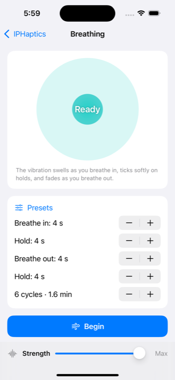

Paint
Paint a line: left to right is time, height is strength.
Length
4.0 s▶ Play
Feel your trackpad.
Play haptic patterns on your MacBook's trackpad with no finger on it: paint your own, get a buzz when a notification lands, feel your typing, or let the sound around you drive it.
Paint a line: left to right is time, height is strength.
These buttons play real patterns through the TPHaptics app on the Mac you're using. If the app isn't running, it starts.
macOS only lets apps buzz the trackpad while you're touching it. TPHaptics drives the Taptic Engine directly, so it can play on its own.
tphaptics:// links and a shell command, so scripts can buzz youThere's no download: the app uses a private macOS interface and isn't notarized by Apple, so a prebuilt copy wouldn't open on other Macs. Building it yourself is quick.
xcode-select --installgit clone https://github.com/jgm240/TPHaptics.git && cd TPHaptics && ./run.shmacOS refuses that request for any app, even as an administrator (it returns "not permitted"). TPHaptics offers the system's own Silent Clicking and Force Click switches instead, which soften the click but can't remove it.
It's undocumented, so Apple can change it without notice, and it isn't allowed in the App Store. The app looks the functions up at runtime and falls back to the public API (finger required) if they ever disappear. The code is open, so you can read every line.
MacBooks with a built-in Force Touch trackpad, on macOS 13 or later. An external Magic Trackpad is untested, and Macs without a trackpad have nothing to buzz.
Accessibility (to see notification banners and key presses; it never records what you type), Microphone (only for audio to haptics, analysed live and never stored), and Calendar (only if you turn on reminders). Everything is optional.
Yes: IPHaptics. It uses Apple's public Core Haptics, so it needs no private APIs.
IPHaptics is the iPhone version, with smooth continuous vibrations.
Feel your phone.
Paint your own vibrations, feel Morse, breathe with it, or let the sound around you drive it. The iPhone's Taptic Engine, finally playable.

These buttons play real patterns in the IPHaptics app on your phone. The app opens, plays, and you swipe back here.
Unlike the old fixed-strength clicks, the iPhone can vary intensity and sharpness smoothly and run as a true continuous vibration. IPHaptics uses all of it.
Time runs left to right, height is strength. Your line becomes one smooth vibration that rises and falls as you drew it, and you feel the strength under your finger while you paint.

Up is stronger, right is crisper. One finger, live control over the motor: a hum you can bend, sharpen and swell as you move.

The vibration swells as you breathe in, ticks softly while you hold, and fades as you breathe out. Box breathing, 4-7-8 or your own rhythm.

Heartbeat, rumble, swell, knock and more, each with a picture of how it feels. Then build your own in the sequencer or Paint.
IPHaptics isn't on the App Store, and Apple doesn't allow one-tap installs of apps like this. Pick the installer you already use; they all install the same file.
Adds IPHaptics as a source so you can install and update it inside the app. These tools sign it with your own Apple ID, on your phone.
One tap, no signing and no 7-day expiry. Only works on certain older iOS versions (roughly up to 16.6.1, 16.7 RC and 17.0).
For Sideloadly or any other signing tool. The file is unsigned, and your tool signs it for you.
Source link for SideStore/AltStore:
Apple only allows apps from the App Store, with narrow exceptions. In the EU, developers can offer installs from their own website, but only with a paid developer account, a domain registered with Apple, Apple's notarization of the app, and a track record Apple sets. A free open-source hobby app doesn't qualify, so IPHaptics works with tools that sign it using your own Apple ID.
No. iOS only lets an app vibrate while it's open on screen. That's a system rule, not something an app can change. (The Mac version can buzz on notifications.)
iPhone 8 or later on iOS 16 or newer. iPads and the Simulator have no Taptic Engine, so nothing would vibrate. Haptics are also muted in Low Power Mode and when System Haptics is off.
It's open source, so you can read every line. It uses only Apple's public Core Haptics framework. The only permission it asks for is the microphone, for the audio feature; audio is analysed live and never recorded or stored.
Not yet. It was built and screenshotted by automated tests, which can't feel vibration. If something doesn't feel right, please tell me.
TPHaptics plays patterns on a MacBook trackpad, even with no finger on it.